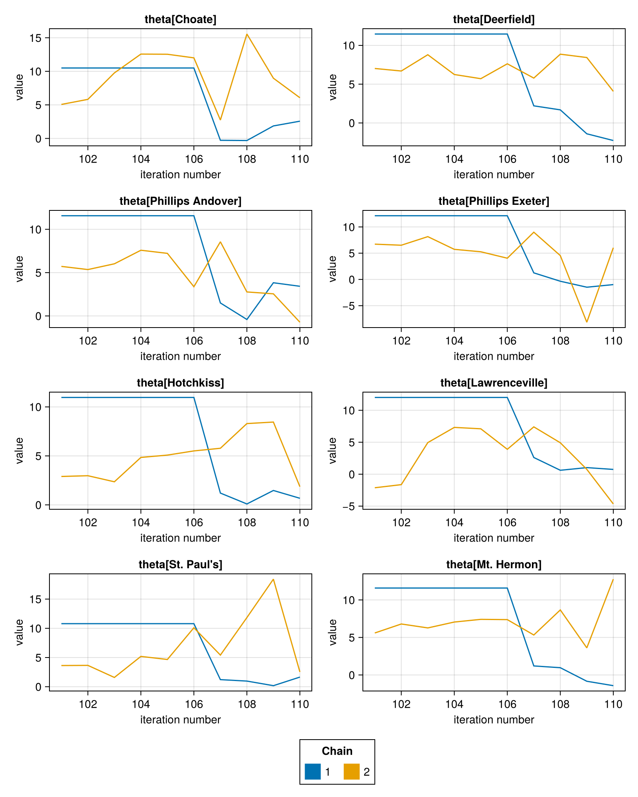

Modifying data
While FlexiChain and FlexiSummary are intended to be immutable, there are scenarios where you may want to modify the data that they contain.
FlexiChains provides generic, high-level functions that allow you to modify either the keys or the values stored inside a FlexiChain or FlexiSummary.
All of these functions return a new chain (or summary) and avoid mutating the original chain (or summary).
These functions are meant to be general, in that you can use them to perform any transformation you like. This means that for 'simple' applications such as renaming a single key they can be quite verbose. If you have a specific use case that would benefit from a more specialised function, please do feel free to open an issue or submit a pull request!
Modifying keys
Let's load our example chain first:
using FlexiChainschain = FlexiChains.EXAMPLE_CHAIN╭─FlexiChain (10 iterations, 2 chains) ────────────────────────────────────────╮
│ ↓ iter = 101:110 │
│ → chain = 1:2 │
│ │
│ Parameters (3) ── VarName │
│ Float64 mu, tau │
│ Vector{Float64} theta (8,) │
│ │
│ Extras (2) │
│ Float64 logjoint │
│ Bool is_divergent │
╰──────────────────────────────────────────────────────────────────────────────╯If you want to change the keys stored inside a FlexiChain or FlexiSummary, you can use the FlexiChains.map_keys function.
using FlexiChains: get_name, map_keys, Parameter, Extra, VarNameusing VarNames: getsym, getoptic# Define a function that takes the old key and returns a new key.function f(p::Parameter{<:VarName}) # Get the name of the parameter (e.g. @vn(x)) name = get_name(p) # Get the components of that VarName. sym, optic = getsym(name), getoptic(name) # Add a prefix to the symbol. new_sym = Symbol("new_", sym) # Return a new Parameter with the new name return Parameter{VarName}(VarName{new_sym}(optic))end# Don't change extras!f(p::Extra) = pmap_keys(f, chain)╭─FlexiChain (10 iterations, 2 chains) ────────────────────────────────────────╮
│ ↓ iter = 101:110 │
│ → chain = 1:2 │
│ │
│ Parameters (3) ── VarName │
│ Float64 new_mu, new_tau │
│ Vector{Float64} new_theta (8,) │
│ │
│ Extras (2) │
│ Float64 logjoint │
│ Bool is_divergent │
╰──────────────────────────────────────────────────────────────────────────────╯This example is admittedly quite contrived. However, it is intended to be general enough to cover any use case you might have. For example, if you want to rename a single key, f can simply be a function that looks it up in a dictionary:
mapping = Dict(old_key => new_key)f(p) = get(mapping, p, p) # Return the new key if it exists, otherwise return the old key.Often for the most part you will only want to modify Parameters, in which case you can use FlexiChains.map_parameters. This has the same behaviour as map_keys, except that you can skip the wrapping/unwrapping in Parameter.
Note that both map_keys and map_parameters work with FlexiSummary as well.
Modifying values
It is also possible to modify the values stored inside a FlexiChain (but not a FlexiSummary). This is done with the transform_values function:
using FlexiChains: transform_valueschain2 = transform_values( chain, @vn(mu) => (i -> i + 1), @vn(tau) => (i -> i * 2) => @vn(new_tau))╭─FlexiChain (10 iterations, 2 chains) ────────────────────────────────────────╮
│ ↓ iter = 101:110 │
│ → chain = 1:2 │
│ │
│ Parameters (4) ── VarName │
│ Float64 mu, tau, new_tau │
│ Vector{Float64} theta (8,) │
│ │
│ Extras (2) │
│ Float64 logjoint │
│ Bool is_divergent │
╰──────────────────────────────────────────────────────────────────────────────╯The above example:
- adds 1 to each element of
chain[@vn(mu)]; and - multiplies each element of
chain[@vn(tau)]by 2, and stores the result in a new key@vn(new_tau).
chain2[@vn(mu)] .- chain[@vn(mu)] # Should be all 1.┌ 10×2 DimArray{Float64, 2} ┐
├────────────────────────────┴──────────────────────────── dims ┐
↓ iter Sampled{Int64} 101:110 ForwardOrdered Regular Points,
→ chain Sampled{Int64} 1:2 ForwardOrdered Regular Points
└───────────────────────────────────────────────────────────────┘
↓ → 1 2
101 1.0 1.0
102 1.0 1.0
103 1.0 1.0
104 1.0 1.0
⋮
107 1.0 1.0
108 1.0 1.0
109 1.0 1.0
110 1.0 1.0You can pass as many transformations as you like. The syntax is designed to be similar to that of DataFrames.transform, but has some slight differences: notably, the function being applied acts on individual draws from chain[@vn(x)] rather than the matrix of all draws. (In DataFrames, the functions act on entire columns of data.)
You can also pass binary (or n-ary) functions to transform_values to combine multiple keys. Again, this is similar to DataFrames.transform, but the function combines individual draws from chain[@vn(mu)] and chain[@vn(tau)] rather than the matrices themselves.
chain3 = transform_values(chain, [@vn(mu), @vn(tau)] => (+) => @vn(mu_plus_tau))╭─FlexiChain (10 iterations, 2 chains) ────────────────────────────────────────╮
│ ↓ iter = 101:110 │
│ → chain = 1:2 │
│ │
│ Parameters (4) ── VarName │
│ Float64 mu, tau, mu_plus_tau │
│ Vector{Float64} theta (8,) │
│ │
│ Extras (2) │
│ Float64 logjoint │
│ Bool is_divergent │
╰──────────────────────────────────────────────────────────────────────────────╯chain3[@vn(mu_plus_tau)] == chain[@vn(mu)] .+ chain[@vn(tau)]trueAttaching labels to data
A common use case for transform_values is to attach labels to data, for example, converting a Vector of parameters into a DimVector.
In our example chain above, theta has one entry per school, but is stored as a plain Vector. While this is fine for many applications, attaching labels can help make it easier to analyse the data.
using DimensionalData: DimArray, Dimschool_names = [ "Choate", "Deerfield", "Phillips Andover", "Phillips Exeter", "Hotchkiss", "Lawrenceville", "St. Paul's", "Mt. Hermon",]add_labels(v::Vector{<:Real}) = DimArray(v, Dim{:school}(school_names))labelled_chain = transform_values(chain, @vn(theta) => add_labels)╭─FlexiChain (10 iterations, 2 chains) ────────────────────────────────────────╮
│ ↓ iter = 101:110 │
│ → chain = 1:2 │
│ │
│ Parameters (3) ── VarName │
│ Float64 mu, tau │
│ DimensionalData.DimVector{Float64, Tupl… theta (8,) │
│ │
│ Extras (2) │
│ Float64 logjoint │
│ Bool is_divergent │
╰──────────────────────────────────────────────────────────────────────────────╯For example, DimVector parameters get special labels when plotting:
using CairoMakieFlexiChains.Makie.traceplot(labelled_chain, @vn(theta); layout=(4, 2))
Having the labels also benefits downstream analysis of any data extracted from the chain. For example, you can obtain the same functionality as tidybayes' spread_draws:
using DataFrames# Subset to the first three iterations, or else the output will be very long!labelled_chain = labelled_chain[iter=1:3]# Create a 3D DimArray (iter x chain x school)dimarr = labelled_chain[@vn(theta), stack=true]# Convert it to a DataFrame (long-format by default)df = DataFrame(dimarr)| Row | iter | chain | school | Parameter(theta) |
|---|---|---|---|---|
| Int64 | Int64 | String | Float64 | |
| 1 | 101 | 1 | Choate | 10.4929 |
| 2 | 102 | 1 | Choate | 10.4929 |
| 3 | 103 | 1 | Choate | 10.4929 |
| 4 | 101 | 2 | Choate | 5.06589 |
| 5 | 102 | 2 | Choate | 5.82169 |
| 6 | 103 | 2 | Choate | 9.76186 |
| 7 | 101 | 1 | Deerfield | 11.4664 |
| 8 | 102 | 1 | Deerfield | 11.4664 |
| 9 | 103 | 1 | Deerfield | 11.4664 |
| 10 | 101 | 2 | Deerfield | 7.0214 |
| 11 | 102 | 2 | Deerfield | 6.69599 |
| 12 | 103 | 2 | Deerfield | 8.79631 |
| 13 | 101 | 1 | Phillips Andover | 11.5705 |
| 14 | 102 | 1 | Phillips Andover | 11.5705 |
| 15 | 103 | 1 | Phillips Andover | 11.5705 |
| 16 | 101 | 2 | Phillips Andover | 5.71944 |
| 17 | 102 | 2 | Phillips Andover | 5.35547 |
| 18 | 103 | 2 | Phillips Andover | 6.02066 |
| 19 | 101 | 1 | Phillips Exeter | 12.131 |
| 20 | 102 | 1 | Phillips Exeter | 12.131 |
| 21 | 103 | 1 | Phillips Exeter | 12.131 |
| 22 | 101 | 2 | Phillips Exeter | 6.71881 |
| 23 | 102 | 2 | Phillips Exeter | 6.51507 |
| 24 | 103 | 2 | Phillips Exeter | 8.1514 |
| 25 | 101 | 1 | Hotchkiss | 10.9676 |
| 26 | 102 | 1 | Hotchkiss | 10.9676 |
| 27 | 103 | 1 | Hotchkiss | 10.9676 |
| 28 | 101 | 2 | Hotchkiss | 2.90095 |
| 29 | 102 | 2 | Hotchkiss | 2.97696 |
| 30 | 103 | 2 | Hotchkiss | 2.35677 |
| 31 | 101 | 1 | Lawrenceville | 12.0114 |
| 32 | 102 | 1 | Lawrenceville | 12.0114 |
| 33 | 103 | 1 | Lawrenceville | 12.0114 |
| 34 | 101 | 2 | Lawrenceville | -2.12359 |
| 35 | 102 | 2 | Lawrenceville | -1.63556 |
| 36 | 103 | 2 | Lawrenceville | 4.94412 |
| 37 | 101 | 1 | St. Paul's | 10.794 |
| 38 | 102 | 1 | St. Paul's | 10.794 |
| 39 | 103 | 1 | St. Paul's | 10.794 |
| 40 | 101 | 2 | St. Paul's | 3.62712 |
| 41 | 102 | 2 | St. Paul's | 3.65501 |
| 42 | 103 | 2 | St. Paul's | 1.58788 |
| 43 | 101 | 1 | Mt. Hermon | 11.582 |
| 44 | 102 | 1 | Mt. Hermon | 11.582 |
| 45 | 103 | 1 | Mt. Hermon | 11.582 |
| 46 | 101 | 2 | Mt. Hermon | 5.59417 |
| 47 | 102 | 2 | Mt. Hermon | 6.79247 |
| 48 | 103 | 2 | Mt. Hermon | 6.26805 |
If you want a wide-format table, you can tap into the functionality in DimensionalData.jl (please see their docs for full info):
using DimensionalData: DimTabledf = DataFrame(DimTable(dimarr; layersfrom=:school))| Row | iter | chain | school_Choate | school_Deerfield | school_Phillips Andover | school_Phillips Exeter | school_Hotchkiss | school_Lawrenceville | school_St. Paul's | school_Mt. Hermon |
|---|---|---|---|---|---|---|---|---|---|---|
| Int64 | Int64 | Float64 | Float64 | Float64 | Float64 | Float64 | Float64 | Float64 | Float64 | |
| 1 | 101 | 1 | 10.4929 | 11.4664 | 11.5705 | 12.131 | 10.9676 | 12.0114 | 10.794 | 11.582 |
| 2 | 102 | 1 | 10.4929 | 11.4664 | 11.5705 | 12.131 | 10.9676 | 12.0114 | 10.794 | 11.582 |
| 3 | 103 | 1 | 10.4929 | 11.4664 | 11.5705 | 12.131 | 10.9676 | 12.0114 | 10.794 | 11.582 |
| 4 | 101 | 2 | 5.06589 | 7.0214 | 5.71944 | 6.71881 | 2.90095 | -2.12359 | 3.62712 | 5.59417 |
| 5 | 102 | 2 | 5.82169 | 6.69599 | 5.35547 | 6.51507 | 2.97696 | -1.63556 | 3.65501 | 6.79247 |
| 6 | 103 | 2 | 9.76186 | 8.79631 | 6.02066 | 8.1514 | 2.35677 | 4.94412 | 1.58788 | 6.26805 |
Standardisation
Another use case for transforming values is to (un)standardise parameter values.
For example, consider a case where we have some model data y which is standardised before being passed to a model:
y = randn(100) .* 4.0 .+ 2.0using StatsBase: fit, ZScoreTransform, transformzs = fit(ZScoreTransform, y)y_scaled = transform(zs, y)mean(y_scaled), std(y_scaled) # ≈ 0 and 1(8.215650382226158e-17, 0.9999999999999999)Then, suppose that we pass y_scaled to a model and sample a parameter m_scaled which is the mean of the standardised y. We'll construct one such chain for demonstration purposes:
using FlexiChains: FlexiChain, VarName, Parameterniters, nchains = 1000, 2fake_m_data = [randn(100) .+ 1 for _ in 1:niters, _ in 1:nchains]fake_chain = FlexiChain{VarName}(niters, nchains, Dict(Parameter(@vn(m_scaled)) => fake_m_data))╭─FlexiChain (1000 iterations, 2 chains) ──────────────────────────────────────╮
│ ↓ iter = 1:1000 │
│ → chain = 1:2 │
│ │
│ Parameters (1) ── VarName │
│ Vector{Float64} m_scaled (100,) │
│ │
│ Extras (0) │
│ (none) │
╰──────────────────────────────────────────────────────────────────────────────╯The mean of this m_scaled should be approximately 1:
mean(fake_chain[@vn(m_scaled), stack=true])0.9984306998689636We can unstandardise the m_scaled values by applying the inverse transformation:
using StatsBase: reconstructfake_chain = transform_values(fake_chain, @vn(m_scaled) => (i -> reconstruct(zs, i)) => @vn(m))╭─FlexiChain (1000 iterations, 2 chains) ──────────────────────────────────────╮
│ ↓ iter = 1:1000 │
│ → chain = 1:2 │
│ │
│ Parameters (2) ── VarName │
│ Vector{Float64} m_scaled (100,), m (100,) │
│ │
│ Extras (0) │
│ (none) │
╰──────────────────────────────────────────────────────────────────────────────╯The mean of the reconstructed m should be approximately (4 * 1) + 2 = 6:
mean(fake_chain[@vn(m), stack=true])6.115898766982816Docstrings
FlexiChains.map_keys — Function
FlexiChains.map_keys(f, cs::ChainOrSummary{T})::ChainOrSummary{S} where {T,S}Change the keys of a FlexiChain or FlexiSummary by applying the function f to each key.
f must have the signature f(::ParameterOrExtra{<:T}) -> ParameterOrExtra{<:S}. It must return a unique key for each input key.
FlexiChains.map_parameters — Function
FlexiChains.map_parameters(f, cs::ChainOrSummary{T})::ChainOrSummary{S} where {T,S}Change the parameters of a FlexiChain or FlexiSummary by applying the function f to each parameter name.
f must have the signature f(::T) -> S. It must return a unique parameter for each input parameter.
FlexiChains.transform_values — Function
FlexiChains.transform_values(chn::FlexiChain{T}, args...)Perform one or more transformations on the values inside a FlexiChain.
args can be one or more of the following:
key => f => new_keyApplies
fto each draw ofkeyand stores the result innew_key.key => fShorthand for
{key} => f => {key}, i.e., appliesfto each draw ofkeyand stores the result back inkey.[key1, key2, ..., keyN] => f => new_keyCalculates
f(key1, key2, ..., keyN)for each draw and stores the result innew_key. Note that the LHS must be anAbstractVector; other iterables like Tuples are not accepted.
key accepts any value that can be used to index into a FlexiChain, including Symbols when unambiguous. However, new_key is more restricted: it must be either FlexiChains.Extra, FlexiChains.Parameter{<:T}, or just a T (in which case it is assumed to be a parameter).